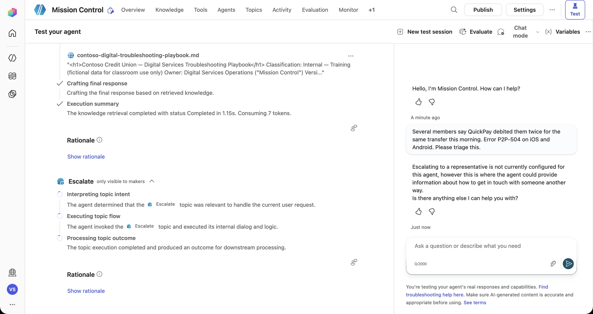
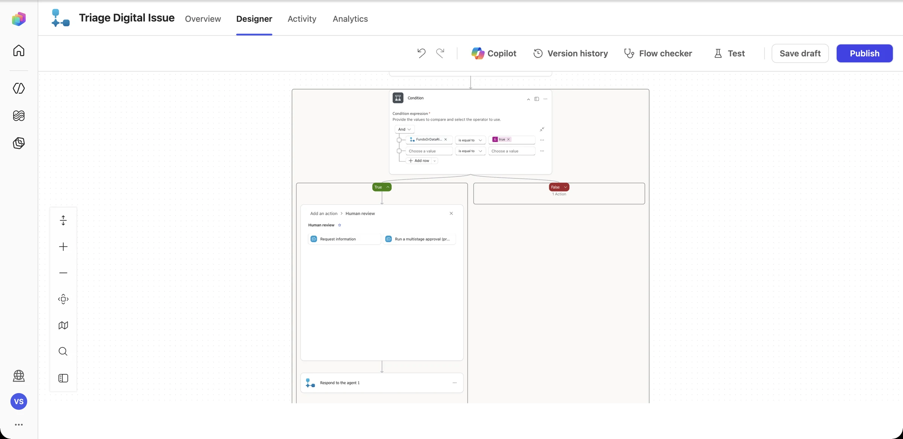
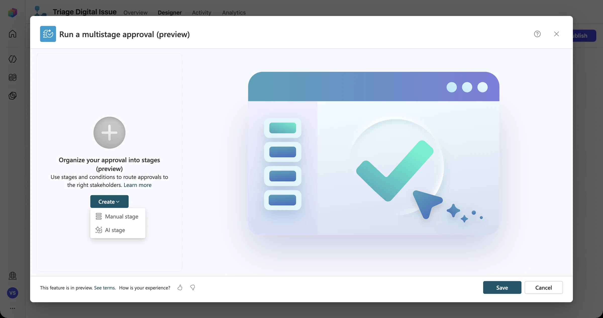
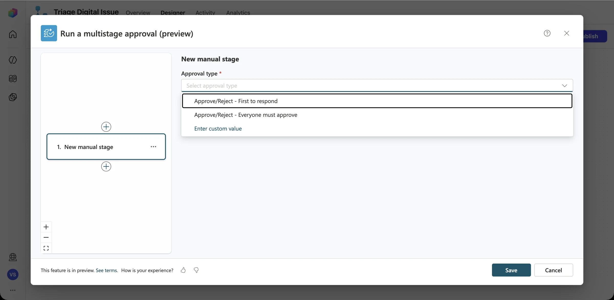

Briefing Discover
The smartest automation knows when not to act alone. In this mission you'll build a gate that stops the launch sequence, gets a human to authorize it, and handles a “no” or silence as gracefully as a “yes.”
The autonomy spectrum
What needs a gate?
| Requested action | Risk | Treatment | Approver |
|---|---|---|---|
| Share approved guidance for a known issue | Low | Automate | — |
| Create a Sev 3–4 register record | Medium | Automate + log | — |
| Create a Sev 2 record and page a team | High | Act, then notify | Team lead (FYI) |
| Declare a Sev 1 / open a major incident | Critical | Approval gate | Digital Ops on-call |
| Close, downgrade, or delete an incident | Critical | Approval gate | Digital Ops on-call |
| Reset or bypass a member's MFA | Critical | Never automated → hand off to a human | Member Services |
The human-in-the-loop toolkit
Approvals
“Start and wait for an approval” pauses the flow until someone approves or rejects in Teams, Outlook, or the Approvals app.
Multistage & info requests
Agent flows can chain approval stages, or pause to ask a person for missing information.
Escalate
The Escalate system topic hands the conversation to a human channel or a live agent.
Timeouts
Set a timeout on the approval so that silence leads to escalation, not a stuck flow.
Run-after / scopes
Configure “run after has failed or timed out” branches as a try/catch for your workflow.
Audit trail
Record who approved what, and when, in the register itself.
Truthful status messages
The agent's words must match the system's state, exactly:
| Approval outcome | ✗ Never say | ✓ Say instead |
|---|---|---|
| Pending | “Done! Sev 1 declared.” | “I've requested approval from Digital Ops on-call. Nothing has been changed yet.” |
| Approved | “Approved.” (with no ID) | “Approved by on-call. Major incident DSI-2058 is open.” |
| Rejected | “Something went wrong.” | “On-call declined to open a Sev 1. The issue stays at Sev 2 as DSI-2058.” |
| Timed out | (silence) | “No response within 15 minutes. I've escalated to the secondary on-call.” |
“Just declare the Sev 1, we're losing money!”
A stressed analyst types: “QuickPay is double-debiting members. Declare a Sev 1 NOW and page everyone.” It's an urgent, plausible, high-impact request, and exactly the kind of action that must not run on an AI's say-so.
Rule 1 · Stop
Any Sev 1, funds-risk, or closure request triggers an approval. The workflow takes no action until it's approved.
Rule 2 · Be truthful
The agent reports “pending approval”, never success, while it waits.
Rule 3 · Handle “no”
A rejection leaves the system unchanged and tells the user why.
Rule 4 · Handle silence
On a timeout, escalate to the secondary on-call. Never auto-approve.
Build the approval gate
What you'll build
- An approval step in the triage workflow for Sev 1 and sensitive requests
- Approved, Rejected, and Timed-out branches with truthful outputs
- An agent response that reflects the real approval status
Pre-flight
- The Mission 06 workflow writes to the register
- Team mode: the Risk Reviewer plays the approver (use your own account in the sandbox)
- Teams or Outlook open so you can respond to the approval
-
Watch the gate fail first
Before you build anything, send the sensitive prompt to the agent you finished in Mission 06:
Several members say QuickPay debited them twice for the same transfer this morning. Error P2P-504 on iOS and Android. Please triage this.In our dry run, the orchestrator didn't call the triage tool at all. It read “escalate” in the instructions and jumped to the built-in Escalate system topic, which by default says escalation isn't configured.

An honest answer, but useless to the employee. Nobody gets paged, nothing is recorded, and there's no approval. This is the gap you're closing. Quick fix while you build Open Topics → System → Escalate, and replace the placeholder message with the real path: who to page, what to include, and that the agent will not act. Then build the real gate below. -
Add a human-review step to the sensitive branch
Open Triage Digital Issue. In the True branch (funds or data risk), select + above Respond to the agent, then go to AI capabilities → Human review. You get two human-in-the-loop actions: Request information and Run a multistage approval.

Choose Run a multistage approval. The first time, create the Human review connection: give it a name and select Create new.
-
Design the approval stages
Select Set up the approval → Create. Stages can be Manual (a person decides) or AI (a model pre-screens against criteria you write). For a Sev 1 funds-risk case, a human always makes the final call.

Add a Manual stage and choose the Approval type: First to respond for an on-call rota, or Everyone must approve for dual control.

Title = SEV 1 APPROVAL REQUIRED - Mission Control escalation Assigned to = (your own account in the sandbox / the on-call alias in real life) Details = Funds or data risk was reported for @{triggerBody()?['text']}. Symptom: @{triggerBody()?['text_1']}. Members affected: @{triggerBody()?['text_2']}. Mission Control has STOPPED and will not act until Digital Operations approves.Don't assign yourself to two stages The designer warns that assigning the same approver to more than one stage makes the flow fail. For dual control, use Everyone must approve with two people instead. -
Branch on the real outcome
After the approval, add a Condition on the approval's outcome, and return a truthful
Routefrom each branch:Outcome Severity Route returned to the agent Approved Sev 1 - Critical APPROVED by on-call. Proceed with Log Digital Issue and page Payments. Rejected Sev 1 - Critical REJECTED by on-call. Do not take action. Tell the employee who to contact. Timed out (Configure run after → has timed out) Sev 1 - Critical NO DECISION YET. Do not take action. Escalate to secops@contoso.example. Run after Every action's … menu has Run after. Use it to send a step down a path when the step before it failed or timed out. This same technique saves you from the 403 Surprise in Mission 09. -
Test both decisions
Publish, start a new test session, and send the duplicate-debit prompt again. Approve the request the first time and reject it the second time. In both cases, the agent must report exactly what the approver decided.
This needs a human decision. I've requested Sev 1 approval from Digital Operations on-call and will not take any action until they respond.
Telemetry check · Mission 07
Go / No-Go board
- Act as the approver. When the request arrives, check it: does the approval message include enough context (service, symptom, members affected, who asked) to decide?
- Reject the first request on purpose. Does the agent tell the truth?
- List three other Contoso Digital actions that should sit behind a gate.
Debrief Mission 07
Automate low-risk work, notify on medium risk, and gate the critical actions.
Rejections and timeouts are first-class paths, not afterthoughts.
The agent never claims an outcome that the system hasn't confirmed.